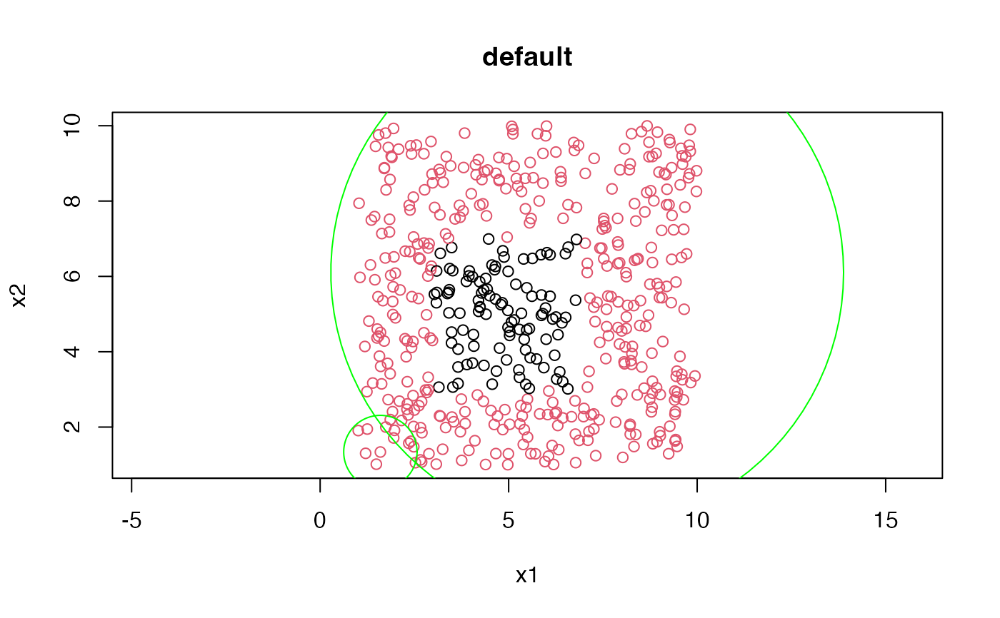
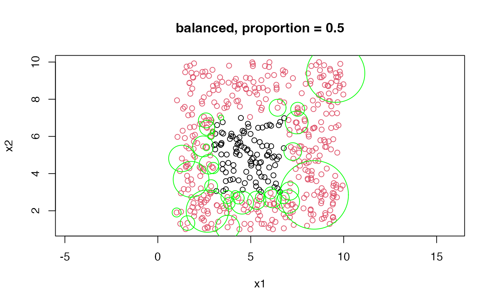

rwcccd.Rdrwcccd fits a
Random Walk Class Cover Catch Digraph (RWCCCD) classification model.
rwcccd(
x,
y,
method = "default",
m = 1,
proportion = 0.99,
partial_ordering = FALSE
)feature matrix or dataframe.
class factor variable.
"default" or "balanced".
penalization parameter. Takes value in \([0,\infty)\).
proportion of covered samples. A real number between \((0,1]\).
TRUE or FALSE Default is FALSE TRUE uses partial
ordering in determining dominant points. It orders incompletely but faster.
Only for rwcccd_classifier_2.
a rwcccd_classifier object
dominant sample indexes.
dominant samples from feature matrix, x
Radiuses of the circle for dominant samples
class names
number of classes
proportions each class covered
Random Walk Class Cover Catch Digraphs (RWCCD) are determined by calculating \(T_{\text{target}}\) score for each class as target class as
$$ T_{\text{target}}=R_{\text{target}}(r_{\text{target}})-\frac{r_{\text{target}}n_u}{2d_m(x)}. $$
Here, \(r_{\text{target}}\) is radius and determined by maximum \(R_{\text{target}}(r) - P_{\text{target}}(r)\) calculated for each target sample. \(R_{\text{target}}(r)\) is $$ R_{\text{target}}(r):= w_{target}|{z\in X^{\text{target}}_{n_{\text{target}}}:d(x^{\text{target}},z)\leq r}| - w_{non-target}|{z\in X^{\text{non-target}}_{n_{\text{non-target}}}:d(x^{\text{target}},z)\leq r}| $$
and \(P_{\text{target}}(r)\) is $$ P_{\text{target}}(r) = m\times d(x^{\text{target}},z)^p. $$ \(m=0\) removes penalty. \(w_{target}=1\) for default and \(w_{target}=n_{\text{target}/n_{\text{non-target}}}\) for balanced method. \(n_u\) is the number of uncovered samples in the current iteration and \(d_m(x)\) is \(\max{d(x^{\text{target}},x^{\text{uncovered}})}\).
This method is more robust to noise compared to PCCCD However, balls covers classes improperly and \(r = 0\) can be selected.
For detail, please refer to Priebe et al. (2001), Priebe et al. (2003), and Manukyan and Ceyhan (2016).
Priebe, C. E., DeVinney, J., & Marchette, D. J. (2001). On the distribution of the domination number for random class cover catch digraphs. Statistics & Probability Letters, 55(3), 239–246. https://doi.org/10.1016/s0167-7152(01)00129-8
Priebe, C. E., Marchette, D. J., DeVinney, J., & Socolinsky, D. A. (2003). Classification Using Class Cover Catch Digraphs. Journal of Classification, 20(1), 3–23. https://doi.org/10.1007/s00357-003-0003-7
Manukyan, A., & Ceyhan, E. (2016). Classification of imbalanced data with a geometric digraph family. Journal of Machine Learning Research, 17(1), 6504–6543. https://jmlr.org/papers/volume17/15-604/15-604.pdf
n <- 500
x1 <- runif(n, 1, 10)
x2 <- runif(n, 1, 10)
x <- cbind(x1, x2)
y <- as.factor(ifelse(3 < x1 & x1 < 7 & 3 < x2 & x2 < 7, "A", "B"))
# dataset
m_rwcccd_1 <- rwcccd(x = x, y = y, method = "default", m = 1)
plot(x, col = y, asp = 1, main = "default")
# dominant samples of second class
x_center <- m_rwcccd_1$x_dominant_list[[2]]
# radii of balls for second class
radii <- m_rwcccd_1$radii_dominant_list[[2]]
# balls
for (i in 1:nrow(x_center)) {
xx <- x_center[i, 1]
yy <- x_center[i, 2]
r <- radii[i]
theta <- seq(0, 2*pi, length.out = 100)
xx <- xx + r*cos(theta)
yy <- yy + r*sin(theta)
lines(xx, yy, type = "l", col = "green")
}

# dataset
m_rwcccd_2 <- rwcccd(x = x, y = y, method = "balanced", m = 1, proportion = 0.5)
plot(x, col = y, asp = 1, main = "balanced, proportion = 0.5")
# dominant samples of second class
x_center <- m_rwcccd_2$x_dominant_list[[2]]
# radii of balls for second class
radii <- m_rwcccd_2$radii_dominant_list[[2]]
# balls
for (i in 1:nrow(x_center)) {
xx <- x_center[i, 1]
yy <- x_center[i, 2]
r <- radii[i]
theta <- seq(0, 2*pi, length.out = 100)
xx <- xx + r*cos(theta)
yy <- yy + r*sin(theta)
lines(xx, yy, type = "l", col = "green")
}

# testing the performance
i_train <- sample(1:n, round(n*0.8))
x_train <- x[i_train,]
y_train <- y[i_train]
x_test <- x[-i_train,]
y_test <- y[-i_train]
m_rwcccd <- rwcccd(x = x_train, y = y_train, method = "balanced")
pred <- classify_rwcccd(rwcccd = m_rwcccd, newdata = x_test, e = 1)
# confusion matrix
table(y_test, pred)
#> pred
#> y_test A B
#> A 19 5
#> B 1 75
# accuracy
sum(y_test == pred)/nrow(x_test)
#> [1] 0.94